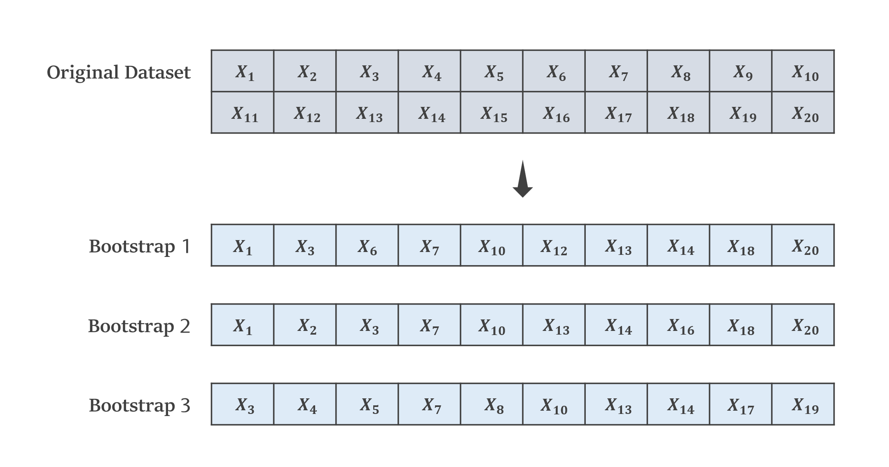

Random Forest
| Category | Machine Learning |
|---|---|
| References | References |
| Created | July 04, 2023 |
什麼是隨機森林？
隨機森林（Random Forest）是一種監督式學習的演算法，它是透過集成式學習的Bagging與多個決策樹組成的，每棵樹都是獨立且隨機選擇特徵的，並且最終的預測結果是基於這些決策樹的集體投票或平均。

Bootstrap
隨機森林的隨機就是透過Bagging的Bootstrap進行隨機抽樣，Bootstrap是一種統計學方法，它會從原始資料集中通過隨機抽樣（有放回地從樣本中選取樣本）生成一個新的資料集，由於抽樣是有放回的，因此某些樣本在新的資料集中可能重複出現，每個新的資料集都具有一定的隨機性，從而增加了模型的多樣性和泛化能力。

隨機森林的優缺點
- 高預測準確性：隨機森林在處理分類和迴歸問題時通常具有較高的預測準確性，因為它是由多棵決策樹集成而成。
- 抗過擬合能力：隨機森林能夠有效地減少過度擬合（Overfitting）的風險，因為每棵樹都是在隨機選擇特徵子集的情況下建立的。
- 能處理大型數據集：隨機森林能夠處理具有大量或高維度特徵的資料集，並且在處理時仍然具有較高的效率。
- 可解釋性：隨機森林能夠提供特徵的重要性評估，使得模型的結果相對容易解釋和理解。
優點：
- 佔用較大的記憶體：由於隨機森林由多棵決策樹組成，因此佔用的內存較大，特別是當森林中樹的數量較多時。
- 較長的訓練時間：相對於單個決策樹，隨機森林的訓練時間通常更長，特別是在樹的數量較多或資料集較大時。
- 難以解釋單個預測過程：隨機森林是由多個決策樹組成的，因此難以解釋單個預測過程，無法提供單個樹的詳細解釋。
- 特徵選擇的限制：隨機森林的特徵選擇通常是基於隨機抽樣的，因此無法捕捉到特徵之間的複雜關係。
缺點：